La leçon de dessin de Arne
L'article original est écrit par Arne publié par itch_studios (janvier 2005).
L'auteur original n'est en aucun cas reponsable de la précision de cette traduction.
Je crois qu'il existe une logique qui dicte si une image est réussie ou pas. Je crois aussi que les humains sont des machines faites de viande, et qu'un jour les ordinateurs seront capables de faire ce que nous faisons. Puisque la logique peut être mise sous forme de règles, de lignes de conduites et de théories, on peut la partager. C'est ce que je vais essayer de faire ici.
Gardez à l'esprit que j'ai déduit empiriquement les théories que je présente ici, et que je suis une machine de viande qui a de grandes chances de se tromper. A un certain niveau, une peinture est assez réussie pour que nos préférences personnelles et nos capacités intellectuelles et cognitives ne remarquent plus ou ne s'attardent plus sur les imperfections. Plus vous en saurez sur l'art et plus vous remarquerez les petits défauts (et plus vous passerez pour un vieux grincheux aux yeux des autres).
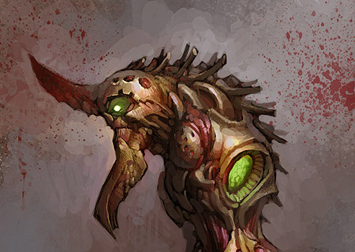
De nombreuses règles vont à l'encontre les unes des autres, s'annulent mutuellement, ou sont à oublier pour certaines approches stylisées. Ce dont je vais parler ici n'est que le large spectre des règles de base sur lesquelles nous sommes généralement d'accord. Les extra-terrestres pourraient trouver étrange la partie sur les ombres froides et la lumière chaude…sans parler de la partie où j'évoque les visages humains.
Le conseil de loin le plus utile que je puisse donner aux artistes en cours d'apprentissage est : Entrainez-vous.
Étudiez tout et sur tous les supports. Oui, cela veut aussi dire dessiner ce que vous détestez. Alors à quoi bon ce cours si tout ce qui compte c'est l'entrainement ? Et bien je pense qu'il y a quelques choses qu'il est bon de savoir dès le début, mais vous ne remarquerez aucune amélioration simplement après avoir lu ce cours. Il ne fait aucun doute qu'il vous faudra du temps pour digérer ce que j'ai écrit ici, alors vous pourriez avoir besoin de jeter de nouveau un œil à ce texte dans quelques mois.
1. Conditions d'utilisations
Vous êtes libre de traduire et héberger ce cours tel qu'il apparait pour l'instant. Vous êtes également libre de le distribuer à des fins éducatives (pour le distribuer à des étudiants par exemple). Il doit cependant demeurer gratuit.
Étant donné que je risque de le mettre à jour et que les nouvelles versions sont en général mieux que les précédentes, je préfèrerais éviter la multiplication des miroirs de cette page. Je ne peux pas mettre à jour les miroirs que je ne contrôle pas. De plus, exposer ce cours entouré de publicités ou pour gagner du trafic sur un site est une idée de débile. Vous êtes sur internet et un lien vers cette page devrait suffire si vous voulez attirer l'attention de quelqu'un sur ce cours.
Je crois que ces conditions d'utilisation disent à peu près la même chose :
Le contenu de cette page est mis à disposition selon les termes de la Licence Creative Commons Paternité — Pas d'Utilisation Commerciale — Partage à l'Identique 3.0 non transcrit.
Si vous avez traduit cette page, ou si vous repérez une traduction, merci de me le faire savoir pour que je puisse mettre un lien vers cette traduction ici.
Par Arne Niklas Jansson — 2005 & 2007
Contact : Rébus e-mail (indice : la réponse est diglett (NdT : Taupiqueur) et est hébergée chez le célèbre client de messagerie de Google)
Traduction : Antoine Gersant (texte) et Shin (images)
2. Terminologie
Je vais essayer de me tenir éloigner du vocabulaire compliqué. Voici quelques mots de base.
HSL — Trois dimensions de la lumière : Teinte, Saturation et Valeur. On peut les représenter sur un cylindre en tant que l'angle, le rayon et la hauteur.
RVB — Trois autres dimensions de la lumière : Rouge, Vert et Bleu.
Exposition — Tout comme l'œil, un appareil photo est un dispositif qui attrape les photons. Quand il enregistre une image, il compte les photons « par pixel ». Quand une image est transformée en une image plate, son support n'est pas assez lumineux pour briller comme le soleil. Les valeurs de lumière doivent être tronquées dans les extrêmes les plus clairs et les plus sombres. Les appareils photos peuvent enregistrer les images dans un format appelé RAW qui conserve toutes les valeurs. Ces images peuvent être observées sur des « moniteurs à grande gamme dynamique » qui sont capables d'émettre des valeurs plus claires que les moniteurs usuels. Quand on peint sur un support normal, l'impossibilité de peindre des choses brillantes nous oblige à raccourcir à différentes astuces qui simulent la luminosité. Le peintre Anders Zorn faisait ça très bien.
- Teinte — Les variations de couleur. Par exemple, la peau a des variations de teinte comme les joues qui sont plus roses que le reste.
- Saturation — La saturation décrit la quantité de couleur présente. Les couleurs « néons » sont très saturées. les couleurs claires et sombres peuvent aussi êtres saturées, mais dans l'espace de couleurs RVB, la saturation est plus visible pour les valeurs moyennes. Cela est du au fait que les couleurs paraissent plus saturées quand les trois composantes RVB ont des valeurs très différentes, ce qui nous place souvent dans des valeurs moyennes.
- Valeur, Luminosité — Il y a plusieurs façons de calculer la valeur. Dans le système RVB, le vert est en général le plus clair, suivi du rouge puis du bleu. Dans un programme que j'ai un jour codé, j'ai utilisé la formule suivante pour calculer la valeur d'un pixel depuis ses trois composantes RVB : Valeur = 0,299 * Rouge + 0,587 * Vert + 0,114 * Bleu.
- Lisible — Se dit quand on peut comprendre ce qu'une image est censée représenter.
- Radiosité, ambiance et lumière réfléchie — J'emploie ces termes pour parler du fait que la lumière qui atteint une surface est réfléchie pour aller atteindre ensuite une autre surface. Cela arrive en permanence. Dans une salle verte, tous les objets prendront une teinte verte par exemple. La radiosité est un terme pour les rendus 3D, j'utilise « lumière réfléchie » pour les reflets dont je connais la source et « Ambiance » pour ceux qui caractérisent une couleur un peu partout dans les environs.
- Speculars (sans équivalent français) — Les points blancs de lumière qui apparaissent sur les surfaces réfléchissantes.
- Aplanir — Enlever les textures et changements de valeurs inutiles
- Texture, bruit — Poussière et autres petits détails de l'image qui ne décrivent rien en particulier.
- Forme, modelage — La forme en 3 dimensions de quelque chose
- Plan — Je ne sais pas exactement, je m'en sers pour dire « premier plan », « second plan » et « arrière plan ». Parfois je m'en sers pour parler d'une surface plane.
- Perspective atmosphérique — L'air n'est pas parfaitement transparent. Comme vous l'avez peut être remarqué, les choses ont tendance à s'effacer avec la distance et les couleur dérive parfois vers le bleu du ciel. La perspective atmosphérique peut servir pour séparer visuellement les différentes parties de votre image à des distances différentes. On peut également l'exagérer. Certains artistes, dont moi, utilisent la perspective atmosphérique pour séparer les différents membres d'un corps qui se superposent ou pour assurer la transition avec l'arrière plan.
3. Apprendre à voir
La partie consciente du cerveau humain ne peut pas gérer beaucoup d'informations, il est plus efficace de développer des réflexes pour la plupart des tâches courantes et répétitives. Une partie de notre cerveau traite les images venant des yeux. Une fois traitées, très peu d'informations sont en fait envoyées à notre conscience (certains autistes ont d'ailleurs un trouble de ce processus, qui les surcharge d'information). Malheureusement pour nous autres artistes, notre cerveau modifie ainsi notre perception de l'image et nous ne voyons plus vraiment ce que nous voyons. Dans une certaine mesure, nous devons apprendre à réaliser le traitement inverse à celui de la perception.
- Déplier — Notre œil parvient à voir toutes les surfaces comme de face ou de plusieurs vues à la fois. Par exemple, le côté d'une boite vue de travers ne nous apparait pas déformé.
- Exposition — Nous parvenons à restituer la couleur d'un objet qu'il soit dans l'ombre ou à la lumière.
- Balance des blancs — Nous voyons toujours les feuilles de papiers comme du blanc, que l'on soit à l'intérieur ou à l'extérieur. Les appareils photos eux font mal la balance des blancs. Si un photographe ne fait pas attention, ses photos d'intérieurs finissent souvent orangées (à cause de la lumière dans ampoules) et ses extérieurs trop froids (à cause du bleu du ciel).
- Redimensionnement avec la distance — Une personne au loin nous semble être de la taille d'un humain. Toutefois, j'ai entendu l'histoire d'un homme qui aurait grandi dans une jungle épaisse et qui n'aurait donc jamais rien observé au loin. Le jour où un scientifique l'a emmené dans la savane où un rhinocéros se tenait à l'horizon, l'homme le prit pour un insecte. Lorsqu'ils s'approchèrent, l'homme crut que l'insecte « grandissait ».
Quand nous dessinons depuis une image plane comme une photographie, il nous est plus facile de voir les proportions, les alignements et les distorsions de perspective. D'une certaine façon, une partie du travail est déjà faite (et sans doute assez mal). Il est bien plus difficile d'étudier depuis la réalité, mais dans l'état actuel des choses les photographies ne nous donnent pas « toute l'image ». Les appareils photos tronquent des valeurs et modifient les teintes subtiles, sans parler du fait que les photographies ne sont pas en stéréo.
4. Pelures d'oignon (penser en calques)
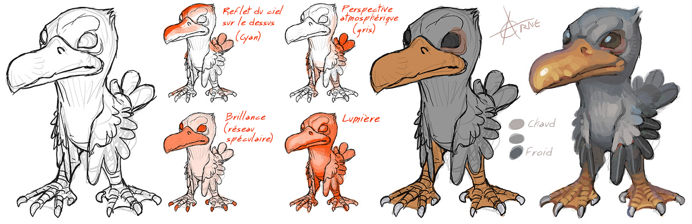
Avant de donner un coup de pinceau, il faut penser à un bon paquet de choses. En fait, vous ne devriez même pas y penser et en faire des automatismes.
- Sentir le volume et l'angle de la forme.
- Déterminer d'où arrive la lumière sur cette forme.
- Essayer de déterminer si certaines ombres atterrissent sur cette surface
- Existe-t-il une lumière réfléchie (radiosité) qui arrive sur cette surface ?
- Quelle est la couleur d'ambiance de la scène (lumière globale réfléchie) ?
- A-t-on besoin d'ajouter des speculars ? La surface est elle mouillée ou réfléchissante et orientée de sorte à réfléchir une source de lumière comme le ciel ?
- Quel est le niveau d'exposition ? Suis-je en train de peindre un objet si éclairé qu'il est plus que blanc ? L'objet est-il tellement dans l'ombre que même son point le plus clair est plongé dans l'obscurité ?
- Du brouillard intervient-il ?
- Quelle est la texture de la surface ?
Notez bien que tout cela concerne surtout les styles réalistes. Chaque coup de pinceau devrait être efficace et cohérent avec le reste de la peinture et votre choix de couleur. Vous pourriez aussi bien avoir un style ou une idée qui vous interdit certaines couleurs ou textures et qui donne la priorité à d'autres éléments. Toutefois, même les illustrations des Super Nana sont des simplifications de représentations réalistes. N'espérez pas vous cacher derrière un « Ça ne fait pas partie de mon style donc je n'apprend pas à le faire ».
5. Lumière
Il n'existe dans la réalité qu'un seul type de lumière, et elle rebondit. La part de lumière (les photons en fait) que vous percevez est celle qui après avoir rebondi finit par rentrer dans vos yeux. La lumière fait deux choses quand elle frappe une surface : tout d'abord une partie de la lumière est absorbée, et c'est ce qui donne aux choses leurs couleurs. Une pomme réfléchit surtout les longueurs d'onde correspondant au rouge et le reste est absorbé et transformé en chaleur ou autre chose. C'est pour ça que les objets noirs chauffent au soleil d'ailleurs. Bref, la lumière rebondit différemment selon la nature de la surface qu'elle frappe. Si la surface est irrégulière, la lumière va rebondir de façon un peu aléatoire, comme quand une balle de tennis tombe sur du gravier. Si au contraire la surface est lisse, la lumière rebondira selon une trajectoire prévisible. Un miroir est une surface très lisse, si bien que la lumière repart non déformée, et on peut y voir son reflet.
Remarquez que toutes les surfaces ont des speculars, puisque ces derniers ne sont que de la lumière réfléchie. C'est juste qu'ils sont très très dispersés et dilués sur les surfaces mats.
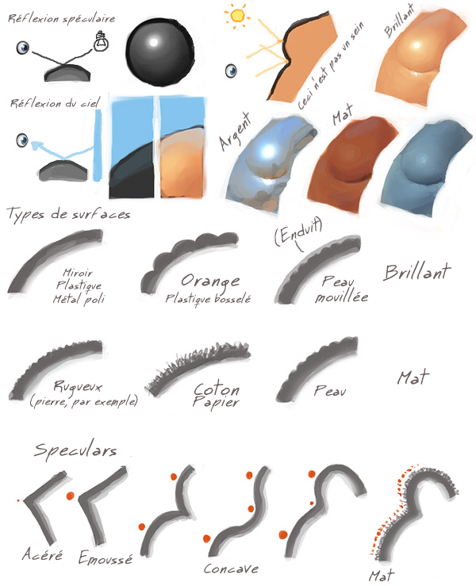
Selon la position de l'œil ou du tyrannoeil, il verra la lumière différemment et les speculars a des endroits différents sur une surface courbe comme celle-ci. Une flaque d'eau n'est pas courbée (mise à part les bords, à cause des tensions de surface) donc vous ne verrez un reflet brillant que depuis un certain angle. Les speculars ne peuvent apparaître que dans un environnement contenant une source de lumière ponctuelle comme le soleil, une ampoule ou une petite fenêtre.
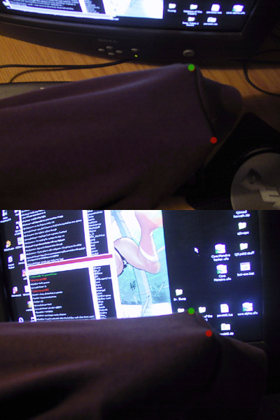
Il y a aussi des speculars sur les vêtements, plus dilués et plus subtils. J'ai tiré sur la manche de ma chemise avec deux doigts pour obtenir une surface plane entre les deux points indiqués (et j'ai ensuite bougé la caméra, pas la chemise).
Sur terre il y a en général un environnement dense sur lequel la lumière peut rebondir, du coup les objets sont plus ou moins éclairés de tous les côtés. Par exemple nous avons le ciel qui est comme une source de lumière bleue en forme de dôme. Nous avons aussi le sol, les murs et d'autres surfaces. Dans l'espace il n'y a en gros qu'une seule source de lumière, le soleil. C'est pour ça que la lune a une face éclairée et une face dans l'ombre, d'où son air plat. Cependant, si vous regardez attentivement vous pouvez voir la lumière réfléchie par la Terre sur la face ombragée de la lune. A cela s'ajoute la lueur des étoiles autres que le soleil, qui est je suppose encore plus faible.
La deuxième chose que fait la lumière quand elle frappe une surface et rebondit, c'est changer de couleur. Si elle frappe une nouvelle fois une surface de la même couleur, cette dernière gagnera en saturation.
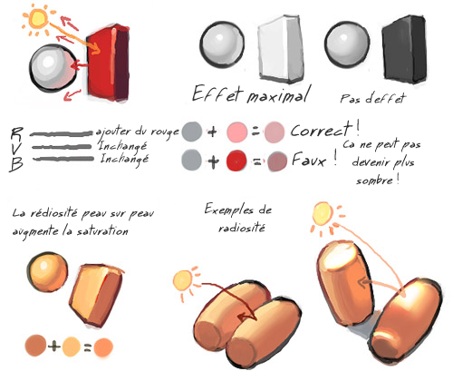
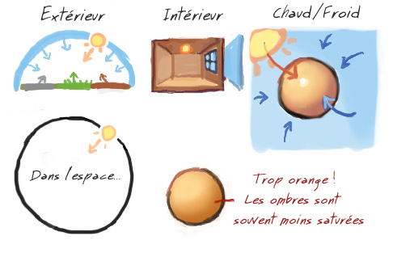
6. Exposition
La lumière du soleil est bien plus intense que celle du ciel, qui est elle même plus forte que la lumière en intérieur. Nos yeux s'adaptent automatiquement après un certain délai, et nous pouvons également les adapter manuellement en plissant les yeux ou en fixant notre attention sur un objet. A cause de cela, il est difficile de comprendre que nos yeux sont en fait assez limités. Leurs limites deviennent évidentes grâce aux appareils photos. Si vous prenez une photo en intérieur, les fenêtres seront surexposées (blanches). Si vous essayez d'ajuster le niveau d'exposition en fonction de la lumière de la fenêtre, l'intérieur de la pièce sera alors sous-exposé.
Ce phénomène peut être utilisé à votre avantage, par exemple en plaçant un personnage où un objet au premier plan là où il sera sombre, de telle sorte que sa silhouette se lise bien avec une pièce très éclairée en fond.
Les variations d'exposition peuvent aussi faire rendre certaines parties d'un corps très claires ou très foncées, et les éloigner très loin des couleurs de peaux habituelles. Quand l'ombre est très sombre et que le côté éclairé est surexposé, la couleur ne peut se loger qu'à la frontière des deux.
7. Matières
Voici quelques exemples de matières et la façon dont je fais leurs rendus.
- Vêtements — Très peu de speculars, juste des zones d'ombre et de lumière. Parfois, une vive lumière peut traverser un vêtement fin et être diffusée sous la surface.
- Cuir — Il peut parfois être un peu brillant et du coup avoir quelques speculars. Attention à ne pas le faire trop saturé.
- Arbres et bois — Mat. Et peu saturé aussi (un peu gris brun / terre de sienne).
- Pierre — Un peu comme les vêtements. La surface est en général trop irrégulière (aussi bien à l'échelle microscopique que macroscopique) pour avoir des speculars visibles.
- Plastique — On dirait que les speculars et les reflets sont de la même couleur que le plastique. Les plastiques sont parfois aussi un peu transparents.
- Or — L'or n'est pas orange. J'utilise du noir, parfois du orange désaturé avec des pointes de vert, puis ensuite plus clair vers le jaune et le blanc.
- Argent — Plus ou moins comme un miroir.
- Metal — Pour les armures, boostez un peu les valeurs, et pas trop de teintes médianes.
- Métal brossé — Un intermédiaire entre une surface grise et une surface en argent.
- Verre — Souvent simplement transparent avec des distorsions. Les speculars apparaissent brutalement et sont souvent blancs. Dans le cas des vitres de voitures, vous aurez peut-être remarqué qu'il est plus simple de voir ce qui est derrière si il y a un ombre sur la fenêtre, la réflexion la plus claire masque ce qui est derrière.
- Surfaces mouillées — Plus de speculars ! Les vêtements peuvent devenir transparents (NdT : pensez Miss T-Shirt mouillé) et les pierres deviennent plus saturées (et leurs détails ressortent plus).
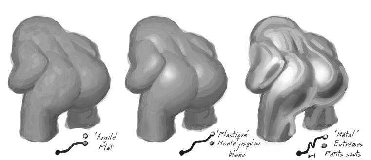
8. Ombres
Les ombres sont plutôt plates et en général moins saturées que le côté éclairé. La lumière d'ambiance se repère plus facilement dans l'ombre. Les ombres deviennent floues avec la distance (phénomène de diffraction).
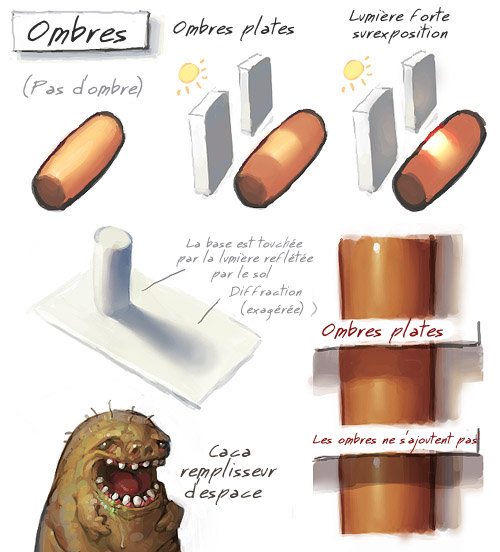
9. Les tons de peau
Considérez l'environnement. la lumière est plus forte dehors, et la peau a tendance à y être moins saturée à cause de la lumière ambiante du ciel bleu et des speculars bleus. Parfois la couleur de la peau dérive vers le violet à cause du bleu du ciel qui s'en mêle. C'est particulièrement vrai si le sujet est à l'ombre.
En intérieur (sans fenêtres, et avec un éclairage à base d'ampoules), la lumière plus chaude augmente la saturation et amplifie les tons oranges et rouges. Les ombres sur la peau peuvent parfois s'éloigner vers le vert, particulièrement si la pièce comporte des objets verts (papier-peint, plantes, meubles).
Dans une pièce blanche ou une salle de bain, les teintes de peau sont plus pâles, proches des couleurs du lieu et moins contrastées en raison de la forte lumière d'ambiance.
Une pièce éclairée par une seule source de lumière intense donnera probablement des ombres presque noires.
…en bref l'environnement dans lequel se trouve la peau affecte beaucoup la façon dont vous devez en faire le rendu.
10. Les teintes de peau
Le corps humain a de nombreuses teintes différentes. Les parties qui sont couvertes par des vêtements sont par exemple moins bronzées : le pubis, les hanches et le torse sont plutôt pâles. Les épaules et les avant-bras (côté extérieur) sont un peu plus bronzés. La peau des genoux et des coudes est plus foncée que le reste. Le visage comporte de nombreuses teintes, comme les joues rosées, et les hommes peuvent avoir du gris voire presque du vert sur la mâchoire s'ils sont adeptes de la barbe de trois jours. La meilleure façon d'apprendre quelle sont les teintes du corps humain est évidemment de l'étudier. N'oublier pas que les animaux, les monstres et les objets ont aussi des teintes diverses. Si vous peignez tout avec la même teinte et la même saturation le résultat sera ennuyeux.
Certaines teintes sont dues aux lumières réfléchies et aux lumières d'ambiance. Les épaules et autres surfaces pointées vers le haut peuvent ainsi recevoir un peu du bleu du ciel.
Les dégradés saturés
Les dégradés entre ombre et lumière ne sont pas de simples fondus mélangeant les deux couleurs. De tels fondus ont l'air sans vie. Si vous regardez les images ci-dessous, vous verrez que les dégradés réussis sont ceux saturés au milieu.
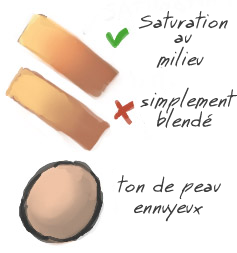
La diffusion sous les surfaces
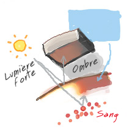
Les lumières intenses peuvent pénétrer les surfaces de certaines matières et rebondir à l'intérieur avant de sortir à nouveau. Cela augmente la saturation et la surface a l'air éclairée depuis l'intérieur. Dans le cas de la peau humaine, on le voit parfois sur les contours nets entre ombre et lumière.
Les feuilles sont brillantes sur le dessus, ce qui veut dire qu'il peut parfois y avoir un specular bleu dessus. La lumière brillant à travers la feuille augmente la saturation du dessous, c'est aussi vrai pour les oreilles et les doigts, qui peuvent prendre une couleur « super rouge » quand ils sont très retroéclairés.
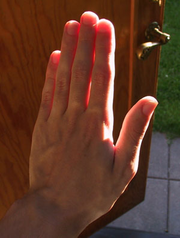
Diffusion sous la surface du bout des doigts. La lumière sur le côté gauche du pouce est sans doute de la lumière réfléchie depuis l'index.
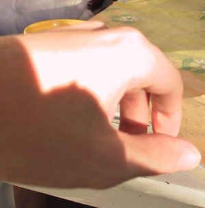
Remarquez que le contour n'apparait que si l'objet est surexposé. Ce n'est pas aussi prononcé sur le pouce.
11. Relativité des couleurs
Les couleurs et les valeurs sont relatives. En utilisant différentes astuces, il est possible de faire croire à l'observateur qu'une couleur en est une autre, ou une valeur différente. Malheureusement, les artistes se font aussi souvent avoir et utilisent plus de valeurs ou de couleurs que nécessaire.
Un contour net se remarque plus qu'une transition douce. Vous devrez apprendre quand utiliser l'un plutôt que l'autre . Parfois vos choix de valeurs seront très limités, par exemple quand vous travaillerez sur des zones d'ombres. En utilisant des contours durs, vous pourrez alors décrire plus de détails en utilisant moins de valeurs différentes. Toutefois, les dégradés sont bien pratiques pour changer de valeur sans que l'observateur ne s'en aperçoive. Les « faux-plats » ont bel et bien l'air plats alors que ce sont des dégradés. Sur l'illustration du faux-plat, le carré à droite est de la couleur la plus à gauche du rectangle.
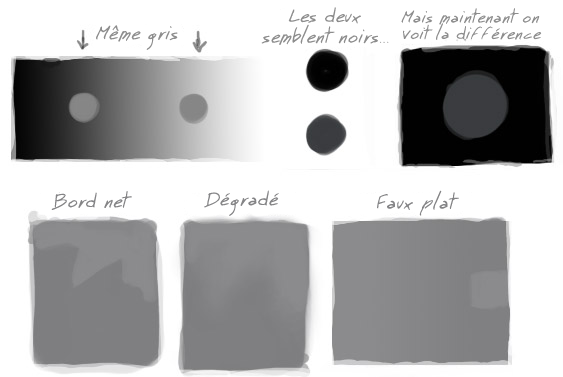
Les couleurs de même valeur sont perçues de façon relative à leur teinte. Une erreur courante est de dessiner un détail trop saturé, ce qui rend grisâtre quelque chose d'autre au voisinage de ce détail on augmente alors la saturation ici aussi pour composer et au final tout est trop saturé.
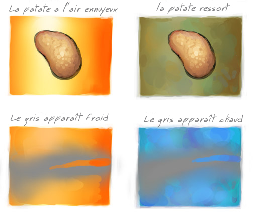
12. Identité des couleurs
On se laisse souvent aller à mettre trop de highlights. Cela masque les couleurs réelles des objets, et vous feriez mieux d'utiliser les ombres pour dépeindre les volumes du sujet.
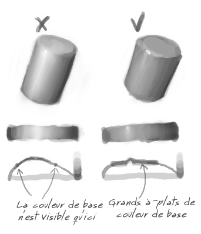
13. Aplanir et simplifier
Travaillez avec des brosses grosses et supprimez les coups de pinceau inutiles. Regardez ci-dessous l'exemple de ce qu'il faut faire (ou pas). Je n'ai pas fait grand chose sur le deuxième, il est en fait simplifié. Il est surprenant de voir comment un peu d'aplanissement ici et là peut tout changer. J'ai aussi passé un peu plus de temps sur le visage car un visage raté peut tout foutre en l'air. L'image est basée sur une photo.
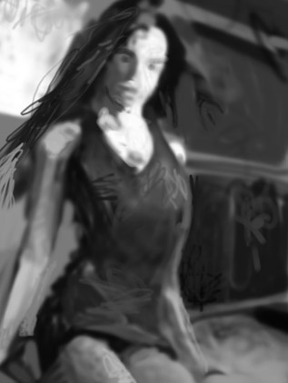
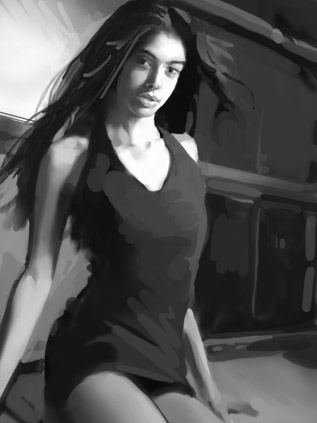
14. Point focaux
Une peinture est une hiérarchie de détails d'importance variable. Si vous êtes en train de peindre une pin-up, alors le personnage et sa silhouette sont ce qu'il y a de plus importants. Dans les bandes dessinées, un contour épais entoure souvent les silhouettes tandis que les détails sont dessinés avec des lignes plus fines par ordre d'importance. Quand vous peignez, ce doit être la même chose mais à coups de pinceau ! Vous devez utiliser des teintes, des saturations, des valeurs, des nettetés, des compositions et des niveaux différents pour guider l'œil de l'observateur vers le point focal de la peinture.
Si votre rendu est le même partout, le résultat sera plat. Vous pouvez guider l'œil vers les points importants, mais une fois l'œil en place il faut quelque chose pour l'y maintenir, comme par exemple des détails bien placés. La quantité de détails sur un endroit doit être proportionnelle au temps que l'œil y passera.
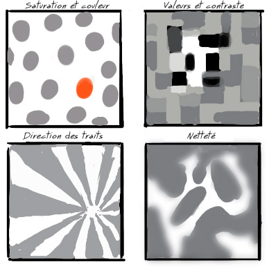
Voici un exemple que j'ai réalisé : (A) Formes importantes | (B) Texture | (C) Les deux à la fois
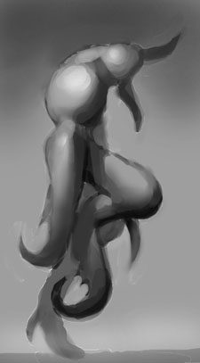
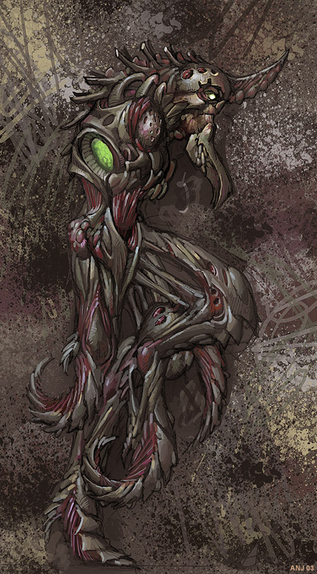
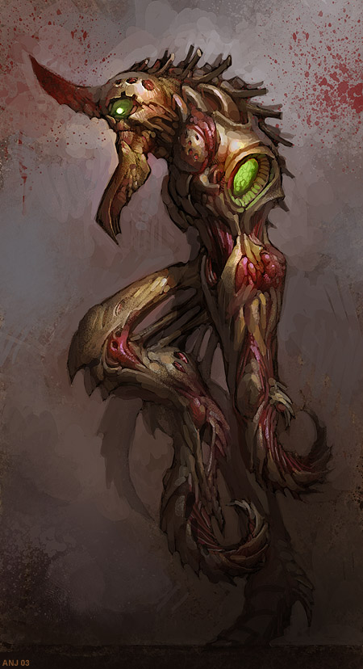
Il faut faire attention à ne pas se laisser emporter par le rendu des détails, surtout au début d'une peinture. Vous ne pouvez pas détailler de la même façon dans l'ombre et dans la lumière. Sur la seconde image (B), j'ai fait apparaitre tous les détails pour montrer ce qui arrive quand on barbouille tout son dessin de détails sans penser aux formes importantes (A). (C) n'est pas parfait non plus mais c'est plus un problème de construction qu'autre chose. On peut difficilement faire mieux avec une vue de côté, et l'anatomie bizarre complique la lecture de l'image.
A est la forme sans détails, B représente les détails et C la combinaison de A et B. Soyez attention à ne pas exagérer B, on doit toujours pouvoir lire la forme !
15. Perspective et construction
Je ne vais pas me lancer dans un long cours sur la perspective ici. Je vais me contenter de vous dire à quel point ils est plus facile de dessiner après avoir dessiné quelques lignes de référence pour aligner vos personnages ou vos environnements.
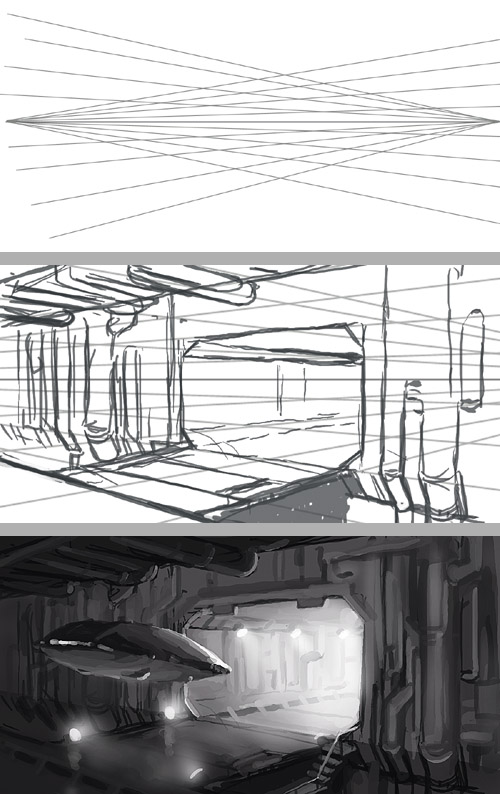
Si vous renâclez à dessiner des environnements juste parce que la perspective est pénible à mettre en place, vous pouvez utiliser une simple perspective à deux points et deviner un peu les détails (NdT : mais faudra pas pleurer si vos décors sont de travers). Les choses n'ont pas besoin d'être parfaites pour avoir l'air parfaites. Vous aurez d'ailleurs des problèmes si vous n'êtes pas capable d'improviser et que vous avez besoin de votre règle avant et après chaque coup de pinceau. Commencez par dessiner une ligne d'horizon puis faites partir de chaque extrémité de la ligne d'horizon des lignes dans des directions aléatoires, débarrassez vous ensuite des bords de l'image et vous êtes paré à dessiner.
Voici quelques lignes rapides et à mains levé qui m'aident à aligner les épaules et le reste. Quand on dessine des personnes, cela peut aider de les aligner selon le tracé de leur colonne vertébrale.
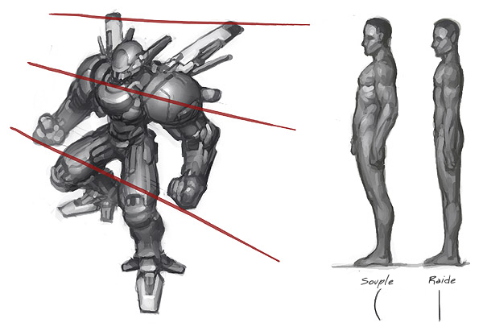
16. Tracés
- Exagérer — L'une des choses merveilleuses avec l'art c'est que l'on peut exagérer les choses, comme les hanches et les seins. Haha, non sérieusement. C'est une bonne chose que les courbes importantes soient plus prononcées.
- Simplifier — L'avantage du dessin sur la photographie est les simplification. Une photographie est remplie de détails qui détournent l'attention. En dessin, on peut se passer de tous les objets qui ne sont pas pertinents pour la scène représentée. Une erreur fréquente consiste à dessiner tous les muscles abdominaux à grand renfort de croisillons. Il vaut mieux conserver de simple lignes à cet endroit, particulièrement si vous allez colorier l'image puisque le contraste entre deux couleurs peut servir de ligne.
- Harmoniser — Un autre mot pour cela est « dynamique ». Contrairement au paragraphe ci-dessus, nous parlons cette fois de relations entre les détails et la façon dont les lignes se croisent et se dominent. Essayez d'utiliser quelques lignes dynamiques sur lesquelles vous pourrez aligner plusieurs éléments.
- Styliser — Quand on décide d'utiliser un style particulier, il est essentiel d'être cohérent. Vous pouvez par exemple transformer les courbes en traits droits ou vous pouvez décider de tout remplacer par des sinusoïdes ondulantes. Je préfère un mélange des deux en transforment les courbes en lignes droites à partir d'un certain seuil.
- Épaisseur des lignes — A quelques exceptions près, j'apprécie peu les dessins où l'épaisseur du trait est fixée. Je vais essayer d'introduire quelques conseils pour savoir quand et comment modifier l'épaisseur de son trait.
- Les traits sont plus épais dans les ombres que dans la lumière.
- Les traits sont plus épais près de l'observateur qu'à l'arrière plan.
- Les contours de silhouettes sont plus épais que ceux des détails intérieurs.
- Les objets plus clairs demandent des traits plus fins.
- Les traits fins sont les amis des motifs détaillés.
- Les traits épais sont les amis des formes simples.
- Les traits épais sont aussi les amis des aplats de couleur.
- Les traits fins aident à obtenir des volumes prononcés et des rendus réalistes.
Aussi, vous n'êtes pas toujours obligé de dessiner une ligne. Il suffit parfois d'en tracer l'extrémité pour que l'œil la complète naturellement. Les endroits où la peau s'agglutine comme la bouche, les fesses ou les seins (NdT : malheur à vous si vous êtes arrivé sur cette page en recherchant un de ces mots clés) sont de bons exemples de ce phénomène. Il est souvent de bon ton de rendre la ligne un peu plus épaisse là où se trouve un trou dans la ligne. Cela se voit bien là où les vêtements sont étirés, par exemple au dessus des espaces entre les muscles… ou sur les décolletés.
Pour finir, voici quelques illustrations. La première a été faite avec Photoshop (5.5) et une tablette Wacom, on ne peut pas appeler ça des traits de bonne qualité mais vous comprendrez sans doute l'idée. La deuxième illustration est un truc que j'ai encré il y a quelques années.
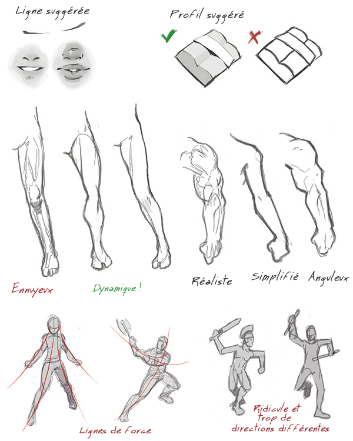
Quand vous peignez, les lignes sombres qui restent du tracé initial peuvent vous pénaliser. Vous pouvez séparer les formes autrement qu'avec des lignes noires. Vous pouvez par exemple utiliser des valeurs différents ou une lignes claire. Voici une illustration de quelque possibilités et des effets produits.
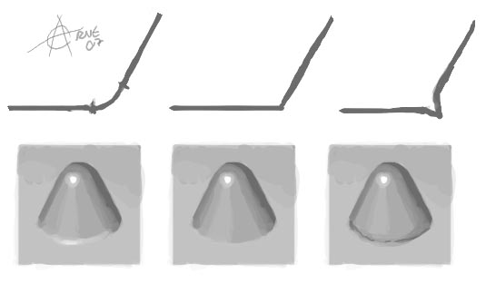
La vie d'un tracé comporte plusieurs niveaux de raffinements au fur et à mesure que les versions précédentes, plus brouillonnes, se font recouvrir par de nouveaux tracés. La version finale n'est pas représentée ici.
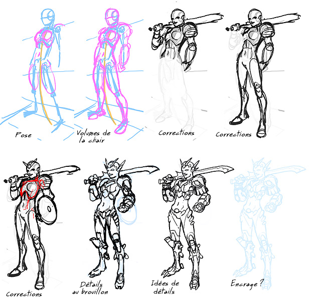
17. Etudes
J'ai commencé à faire des études il y a seulement quelques années et je le regrette. Vous ne tomberez jamais « sur la ligne juste » avec des devinettes et des barbouillages aléatoires. C'est avec des références que vous avancerez. Pour dessiner rapidement et naturellement vous devez parvenir à dessiner sans penser à la construction générale des choses (comme l'anatomie de base). Alors vous pourrez vous concentrer sur les concepts et les détails. Construisez vos dessins/peintures. N'avancez pas détail par détail avec votre crayon. Vérifiez systématiquement les proportions générales et ne vous laissez pas entrainer par les détails trop tôt. Placez des points de repères là où sont les caractéristiques importantes, elles vous serviront de balises sur lesquelles vous aligner.
Essayez de n'apprendre qu'une chose à la fois. Il est impossible de s'entrainer en même temps au jonglage et au 400 mètres haies. Si vous voulez apprendre à maitriser un médium ou un outil, faites des études de choses simples comme des fruits. Si vous voulez apprendre à dessiner des visages, utilisez un médium que vous connaissez bien pour ne pas avoir à lutter avec lui en plus. Si plusieurs facteurs d'incompétence entrent en jeu, vous ne pourrez pas identifier ce qui ne va pas. La quantité est importante aussi, je ne vous recommande pas de faire des études d'anatomie avec des outils pour gravures sur bois.
Tracés
Les études au crayon n'ont pas besoin d'être autre chose que des petites esquisses sur du papier. J'y passe à chaque fois quelques heures et j'en mets 10 à 30 sur une feuille A4. Je ne fais que quelques études par mois, mais je remarque des progrès à chaque fois. Imaginez un peu quels seraient les résultats si vous le faisiez plusieurs fois par semaine pendant des années.
Quelques vieilles planches d'études faites d'après une bande dessinée (poses) et des photos (visages).
Peinture
Quand je fais des études digitales, j'utilise Photoshop et une image trouvée sur le net. Je duplique la fenêtre et j'en vide une, où je commence à placer les masses de couleur prédominantes. Après ça, j'augmente graduellement le niveau de détail, les valeurs et les couleurs avec le plus de précision possible. Quand de loin ou avec les yeux plissés on elle ressemble à l'original, c'est terminé. Je travaille toujours avec la plus grosse brosse possible permettant de rendre un détail donné. Je ne prélève pas les couleurs depuis l'original, mais je conserve les deux fenêtres de la même taille pour mieux voir si je rate le placement de quelque chose. Si vous voulez compliquer l'affaire, vous pouvez toujours essayer de dessiner dans une fenêtre de taille différente, avec une symétrie ou en peignant ce que bous observez autour de vous plutôt qu'une photo.
Études de statue : La première est faite sous OC (Open Canvas), et la seconde sous PS (Photoshop).
Ici j'ai essayé d'être le plus économique possible. La deuxième n'est pas une étude mais un exemple de nettoyage, ce qui n'est pas indispensable pour les études.
18. Sujets d'études
Étudiez tout ! Vous devez construire dans votre tête une grande bibliothèque de formes pour pouvoir dessiner intuitivement. Cela prend une vie voire plus alors vous devriez commencer dès maintenant !
Anatomie humaine
L'une des choses les plus importantes à connaitre. Même les monstres ont des traces d'anatomie humaine.
- Le corps entier. Utilisez des photos, des livres d'anatomie, des statues ou des gens.
- Le visage est ce que l'on regarde en premier. Si vous vous déplacez une ligne d'un poil, toute l'expression du visage peut changer. Étudiez des photos vos amis et vous même.
- Les mains aussi sont importantes (et difficiles) à maitriser.
- Les pieds peuvent poser problème, non pas à cause de leur forme, mais parce qu'il faut enraciner le personnage sur le sol de telle sorte qu'il ne soit pas en train de tomber et que le sol n'ait pas l'air penché.
- Les vêtements de tous les jours. Il est important de savoir comment les vêtements se plient et à quoi ressemblent différents types de vêtements se comportent.
Gestes et styles
Vous devez avoir des activités variées et trouver des idées neuves. Apprendre des styles différents peut être une bonne idée.
- Faites du dessin d'observation en utilisant vos amis, les gens au café, dans le bus ou ailleurs. Quelle est la posture d'une personne qui ouvre une porte en cherchant ses clés tout en étant intimidé par l'artiste ?
- Marvel. Comment les artistes de Marvel représentent-ils l'anatomie humaine avec des lignes ? (NdT : Ils la représentent mal ! Haha !) Quels sont les détails importants et lesquels sont simplifiés ?
- Modesty Blaise, ou un autre style de bande dessinée réaliste. Faire des dégradés avec simplement du noir et du blanc n'est pas chose aisée.
- Le manga ou un style qui vous plait. Encore une fois, comment l'artiste transforme-t-il le corps humain en une série de lignes et des tâches de couleurs ? Quelles parallèles pouvez vous établir entre les différents styles ?
Environnements
Placer un personnage dans un environnement le rend tout de suite plus vivant. C'est d'ailleurs quelque chose que je me dois d'apprendre.
- Les paysages avec des champs, des montagnes ou autre chose.
- Les forêts denses ou les jungles.
- Les paysages urbains ou industriels.
- Un environnement intérieur, comme une pièce avec des meubles. Oui c'est chiant. Pour vous dire la vérité je ne l'ai pas encore fait.
Allez chercher un livre sur les animaux
…et dessinez des animaux. Une bonne façon de concevoir un monstre est de fusionner plusieurs animaux en un.
- Tout ce qui vit. La nature perfectionne ses concepts depuis des millions d'années alors vous feriez bien de les étudier.
- Les chevaux, les chats, les chiens, les oiseaux. Ce sont les plus importants car les plus courants.
Machinerie
Vous devez aussi vous entrainer à dessiner des machineries. Cela peut servir pour dessiner des robots et droïdes de combats avides de vengeance et exploseurs de planètes.
- Différents modèles de voitures.
- Les machines permettant de creuser ou les machines d'assemblage.
- Les véhicules militaires.
Natures mortes classiques
C'est à dire n'importe quoi. Ce sont de bons sujets pour apprendre à peindre et dessiner, à cause de leurs formes simples. Vous n'aurez pas trop à lutter avec les formes et pourrez vous concentrer sur les textures.
- Fleurs, fruits, squelettes, sculptures, bouts de bois et de métaux rouillés.
19. Auto-critique
Analysez vos erreurs. Il est fréquent de s'aveugler en regardant trop longtemps la même image (ce que vous êtes bine obligé de faire pour travailler dessus). Essayez de renverser les images (symétrie horizontale), de les regarder à l'envers, à travers un miroir (j'utilise un CD), de vous reculer ou de zoomer/dézoomer. Ne restez pas assis et les yeux rivés sur le papier ou l'image zoomée. Sous Photoshop vous pouvez aussi utiliser « Créer une nouvelle fenêtre pour Nom du document » (ou « New View » en anglais).
Vous devez aussi accepter le fait que ce n'est pas parce que vous avez travaillé sur une image pendant longtemps qu'elle vaut quelque chose. Vous devez savoir sacrifier le temps passé sur quelque chose si le résultat est bancal. Même si vous êtes content des détails il se peut que vous deviez les retravailler. Parfois ce n'est pas le détail sur lequel vous vous concentrez qui cloche mais quelque chose qui y a trait, comme la valeur de son arrière plan ou la perspective d'un autre détail.
20. Ordre d'importance
Pour parler de façon très très générale, certains aspects d'une peinture sont plus importants que d'autres.
Construction
Qu'essayez vous de peindre ? Votre sujet et votre composition devraient être réussis au niveau fondamental, sinon même le meilleur rendu du monde ne sauvera pas votre image de la médiocrité. N'ayez aucune illusion du genre « ça va s'améliorer avec les étapes suivantes ». Si une pose est foirée, elle aura toujours l'air foirée une fois la peinture finie, même si Rembrandt fais le rendu à votre place.
Valeurs
Pour qu'une peinture soit réussie vous devez utiliser les valeurs pour sculpter les formes. Les valeurs peuvent très bien regrouper et dissocier les formes.
Exemple : la première version est évidemment ratée. Chaque forme a reçu toute la palette, de l'ombre à la lumière. La seconde est mieux mais chaque forme n'a qu'une valeur. La troisième a différentes valeurs sur différents formes. La construction n'est peut-être pas terrible par contre ; ce n'est pas une pin-up très intéressante.
Exemple 2 : ici les valeurs et les couleurs sont utilisées pour séparer premier plan et arrière plan, mais je n'aime pas trop le résultat non plus sans doute à cause de sa construction (encore).
Couleur
On peut toujours s'en sortir avec des couleurs imparfaites. Si vous n'arrivez pas trouver les bonnes couleurs, ce sont en fait probablement les valeurs qui ont un problème. Petite note en passant, si vous avez réussi les étapes précédentes il est alors facile de faire des images qui auront l'air différentes à vos yeux simplement en réglant la balance des couleurs. Dans mon cas les couleurs de départ sont souvent les meilleures.
21. Critiques et erreurs fréquentes
Quand j'écris des critiques sur des forums, je me retrouve souvent à taper les mêmes remarques à chaque fois. Voici une liste des erreurs courantes que font les artistes débutants.
Problème : Utiliser ombre, teinte médiane et highlight sur chaque objet indépendamment de sa forme et de son angle.
Solution : Essayez de dézoomer, de retourner l'image ou votre tête. Ne faites pas le rendu de chaque détail un part un. Des petites formes éclairées équitablement ont tendance à aplatir l'image et à masquer les formes importantes.
Problème : Ajouter du noir pour les ombres et du blanc pour la lumière, puis flouter entre les couleurs pour la transition (par exemple avec l'outil « doigt » de Photoshop).
Solution : Cela rend les peintures grisâtres et ternes. J'ai croisé quelques personnes qui cherchaient des tutoriaux de « shading ». Il n'existe rien de tel. Il n'y a pas de méthode simple qui consiste à dire qu'il faut commencer avec une couleur foncée et aboutir à une couleur claire pour chaque détail. Vous devez apprendre comment vit la lumière et faire le rendu presque comme si vous étiez un logiciel de modélisation 3D. N'en déplaise à certains, c'est vrai au moins pour moi puisque j'obtiens souvent de meilleurs résultats en me débarrassant de mes habitudes et des mes préjugés pour ne suivre que les « règles de rendu ».
Problème : Faire le rendu et mettre des highlights sur des petits détails qui détournent l'attention. Utiliser l'outil Densité +/- (« Dodge ») de Photoshop.
Solution : Vous aller devoir sacrifier de nombreux détails qui auraient pu être magnifiques une fois rendus. Ce qui compte c'est la peinture dans son ensemble alors vous pouvez oublier les étincelles d'éclat lumineux sur la boucle de ceinture du petit type sans importance dans le coin de l'image. L'œil s'attarde sur les détails, les highlights, les grands contrastes et la saturation. Vous devez guider l'œil vers les parties importantes de votre peinture.
Problème : Poses plates et raides, personnages écartelés.
Solution : C'est un de mes propres problèmes. C'est si facile de dessiner les gens de face ou de profil avec les bras étendus… Ça aura toujours l'air ennuyeux et sans dynamique à moins que vous ne fassiez une icône ou que vous ayez une idée géniale de composition (NDT : Pensez Jésus). Il est souvent tentant de vouloir mettre en valeurs tous les détails d'un personnage dans un seul dessin mais c'est rarement compatible avec une pose dynamique. Cacher un bras derrière le corps est un sacrifice parfois nécessaire pour obtenir une bonne pose. De plus, en cachant un détail, vous laissez l'imagination de l'observateur décider à quoi il ressemble, et ça peut être une bonne chose ! Le résultat est parfois meilleur dans l'esprit de l'observateur qu'il ne l'aurait été sur papier. En bref, apprenez à gérer des poses dynamiques et vue de travers à partir de la réalité, de photographies ou de bandes dessinées. Vous n'irez pas bien loin avec des personnages écartelés.
Problème : Coups de pinceaux inutiles ou tentatives de coups de pinceaux artistico-« Oh regarde comme c'est spontané ! »
Solution : Chaque coup de pinceau doit contribuer au résultat final. Certains espèrent s'en tirer avec des coups de pinceaux aléatoires et désorganisés. Les traits aléatoires créent des détails aléatoires, et les détails aléatoires détournent des vrais détails de l'image. Je sais bien que certains artistes donnent l'impression de peindre une scène parfaite avec quelques traits bien sentis et légers, mais gardez à l'esprit qu'il passent beaucoup de temps à styliser et à nettoyer pour atteindre ce résultat. Revisitez toute votre peinture pour supprimer les traits inutiles qui ne contribuent pas à l'ensemble. Soyez sur que ce que vous représentez attire l'attention plus que des traits pseudo-artistiques. Les formes et les volumes sont toujours plus importants et beaucoup de jolis traits devront être sacrifiés pour que le résultat soit là.
Ajouter un commentaire
Commentaires

C'est super cool d'avoir linké ce cours dans l'apprentissage au shading/blending Merci a vous meme si je sais que vous n'avez rien inventé de ce cours vous m'avez permis de le trouver

@Trippledose > Merci pour le compliment mais gare à la méprise. Nous avons simplement traduit cet article, l'original est mentionné en haut de page. Hélas, je doute que Arne dispense des cours.
Je trouve votre travail formidable! Il correspond tout à fait à ce que je cherche depuis quelques années déjà. Je me demandais si vous ne donneriez pas des cours ou ne dirigeriez pas un stage de formation!

Pour le coup, je ne suis pas trop sûr, mais il me semble que les rehauts désignent uniquement les coups de crayon blancs quand on travaille à la sanguine notamment. La notion de "specular" peut aussi être utilisée en physique (par exemple, quand on étudie les surfaces lambertiennes) et est donc plus générale : disons que les rehauts sont un moyen de représenter les highlights et les speculars :p
Merci d'avoir traduit ce bon article ! Cependant, il me semble que "speculars" en français, c'est "rehauts" non ?
superbe tuto! Un grand merci pour le temps que vous y avez passer!
merci et bravo pour le temps que vous avez consacré.
Rien a dire, si j'avais consulté ce site avant çà m'aurait évité plusieurs annees d'acharnement à trouver les techniques de bases
Vraiment très complet et très intéressant même en ayant déjà des bases. Merci!
C'est super, on voit les premiers progrès juste après avoir lu.
Le tutorial est impressionnament clair O.O. Bravo!
Article très intéressant , j'ai beaucoup appris avec , Merci beaucoup :) !
--MugenSaku


){kind=link}